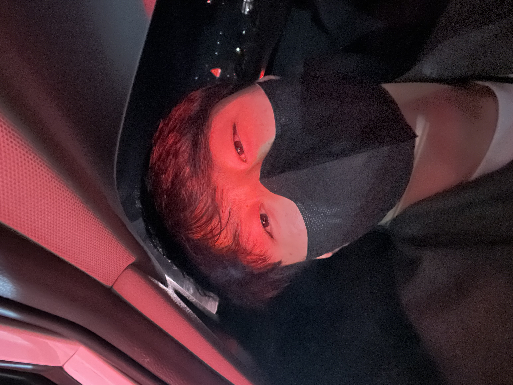

이름 : 양희준(HuiJun Yang)별명 : Ace.Y생년월일 : 2000. 03. 04 (경기도 포천, 대한민국)MBTI : ENTJContact : +82-(0)10-6380-0304, heejun1481@gmail.com, instagram @ace.y_00Blog : (준비중)Don't click!! <약력> 송우초등학교 졸업 동남중학교 졸업 동남고등학교 졸업 ROKMC 전북대학교 스마트팜학과 재학 <취미> 여행 수학, 물리, 화학 공부 필라테스, 헬스 동물, 식물 키우기 자전거 타기 걸그룹 영상!!!
<철학> 본질에 집중하자. 아는 만큼 보인다. 단순함이 복잡함을 이긴다. 꾸준함이 진리다. 매일매일 단 하루도 빠지지 않고. <목표> 노벨상 수상 농학과 공학의 융합 동물과 식물의 융합 세계 최고 스마트팜 경영자 좋은 아들, 좋은 남편, 좋은 아빠 되기 <저서> yang's Book listsyang's Poster lists yang's Paper lists <지식> Mathematics Physics Chemistry Biology Mathematical physics Physical Chemistry Biophysics Biochemistry Plant physiology Animal physiology Statistics Economics business <자격증> 운전 면허
1종 보통
1종 대형(예정)
2종 소형(예정)
기능사
전기기능사(예정)
기사(예정)
버스기사(예정)
축산기사(예정)
<리뷰>책영화 <좋아하는 인물> 한석원 선생님 스티브 잡스 <공부에 대한 마음가짐> 1. 일반화 : 모든 문제를 한 개의 코드로 푼다. 2. 꾸준함 : 매일매일 단 하루도 빠지지 않고. 3. 아는만큼 보인다